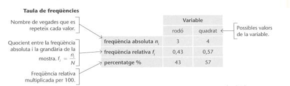
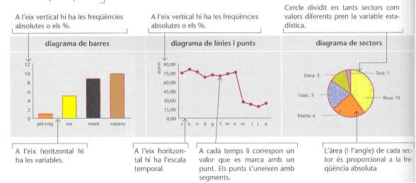
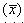
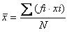
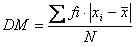
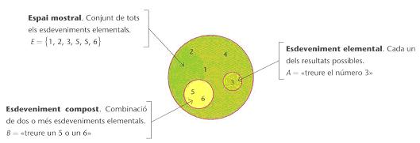
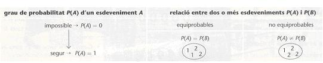
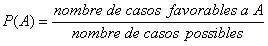

RECORDA
Recorda:
1. Estadística
Freqüència

Diagrames

Mesures de centralització
Mitjana aritmètica : és el quocient que resulta de la suma de totes les dades entre el nombre total de dades:

Moda (Mo): és el valor que es repeteix més, el que té una freqüència més gran
Mediana (Me): és el valor central de les dades, després d’ordenar-les; és a dir, hi ha tants valors més grans que ella com més petits.
Mesures de dispersió
Recorregut o rang: és la diferència entre els dos extrems del conjunt de dades (entre el valor més gran i el més petit)
Desviació mitjana (DM): és la mitjana aritmètica dels valors absoluts de les desviacions de cada dada:

Fonts: Matemàtiques 2n ESO. Grup Promotor Santillana; Matemàtiques 1. Casals
2. Probabilitat
Experiments i esdeveniments. Definicions
Experiment determinista: és aquell en què es pot predir el resultat.
Experiment aleatori: és aquell en què no es pot predir el resultat.

Probabilitat. Regla de Laplace

Regla deLaplace: es pot aplicar en el cas d’esdeveniments elementals equiprobables
